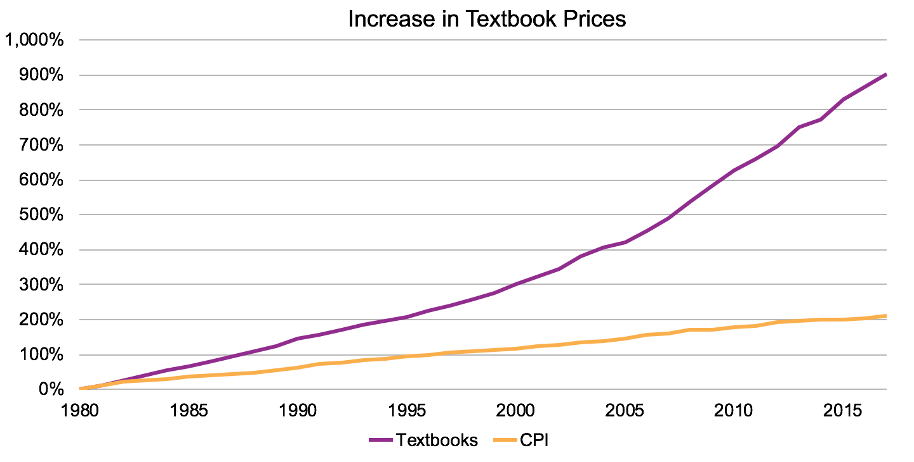

Open Educational Resources (OER) are learning, teaching and research materials in any format
and medium that reside in
the public domain or are under copyright that have been released under an open license, that
permit no-cost access,
re-use, re-purpose, adaptation and redistribution by others.
Open educational resources (OER) are teaching, learning, and research materials intentionally created and licensed to be free for the end user to own, share, and in most cases, modify. The term "OER" describes publicly accessible materials and resources for any user to use, re-mix, improve, and redistribute under some licenses. These are designed to reduce accessibility barriers by implementing best practices in teaching and to be adapted for local unique contexts.
One of the first aspects of OER to be praised by the general public was the cost savings that they could bring to students. As Figure 1 shows, the price of college textbooks has risen greatly over the past 35 years, outpacing all other consumer goods in the Consumer Price Index by a great margin.
The cost of textbooks has a profound impact on college students, many of whom must wait to purchase their course materials until well into the semester or choose not to purchase them at all.
The cost of textbooks might not be a major issue on its own, but it can be an insurmountable hurdle for students already struggling to get by. As a recent survey found, 36% of college students are food insecure. This number is even higher for community college students, 42% of whom reported food insecurity. The problem of food and housing insecurity among college students cannot be fixed by adjusting the price of textbooks alone. There are a wide variety of reasons why these problems are in place. However, the unexpected additional cost of textbooks can make the difference between a student persisting in college or dropping out.
Although cost savings are a major talking point in favor of adopting open educational resources, instructors can utilize OER effectively without replacing paid resources at all. In fact, the freedom to adapt OER to instructional needs is often the most attractive aspect of OER. Since OER are openly licensed, educators are free to edit, reorder, and remix OER materials in many ways.
Here are the few resources where you can get more knowledge about the open access. We hope now you know about Open Access and It's implications on the education sector. Please feel free to contact us.